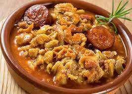

DOBRADINHA

Description
Dobradinha is traditional brazillian's dishe, it is made with beef tripe, white beans, and so many others igredients
To make a "dobradinha" recipe, beef tripe is used, which also goes well in stews and some snacks. In addition to it, other tasty ingredients such as "Linguiça Calabresa", carrots and
chopped bacon form the accompaniments for "dobradinha com feijão branco". The dish can easily serve up to six people and combine with a variety of side dishes.
Ingredients
- 800 grams of beef tripe
- 1 Lemon
- 3l of water
- 200 grams of bracon
- 2 Calabrese sausage
- 2 onions
- garlic
- pepper
- chopped tomatoes
- white beans
- black pepper
- carrot
- rice
Steps
-
In a large pan, add the water and bring to a boil. Slice the beef tripe into strips and set aside.
Squeeze the lemon into the boiling water and add the tripe, let it boil for 10 minutes, drain and dispense with the water;
- Chop the Bacon and slice the Calabrese Sausage.
In a pressure cooker over medium heat, add the oil and fry the bacon and sausage until they start to brown;
- Chop the onions and pepper, discarding the seeds, add to the pan and sauté until translucent.
Mash the garlic in the pan, and sauté for another 1 minute;
- Add the peeled tomato, beef tripe and white beans, mix. Season with salt and black pepper, close the pan and cook over high heat until it sizzles.
Reduce the heat to medium/low and let it cook for 30 minutes;
- Turn off the heat and let the pressure release on its own.
Peel and slice the carrot, add to the pan, turn on the heat to medium temperature and cook for another 10 minutes until the carrots are slightly soft;
- serve the beef tripe, accompanied by rice.